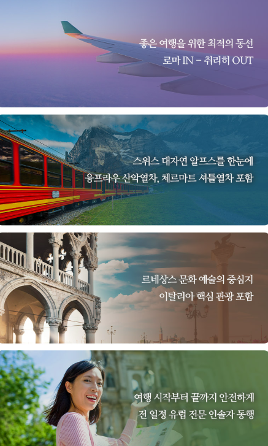
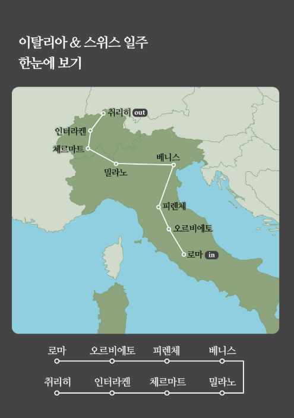

1. 이탈리아 스위스 패키지 7박9일의 특징
이번 이탈리아 스위스 패키지 7박9일은 유럽 여행에서 인기가 높은 이탈리아와 스위스를 한 일정으로 연결한 상품입니다. 이탈리아에서는 역사적인 도시와 미술, 건축, 음식 문화를 즐기고 스위스에서는 알프스 산악 풍경과 자연을 경험할 수 있어 두 나라의 매력을 확실히 비교할 수 있다는 점이 장점입니다.

2. 이탈리아 핵심 일주 일정에서 볼 점
상품명에는 이탈리아 핵심 일주가 강조되어 있습니다. 이탈리아는 도시마다 분위기와 대표 관광지가 크게 달라 패키지 일정에서도 어떤 도시가 포함되는지가 중요합니다. 일반적으로 로마, 피렌체, 베네치아, 밀라노 등 주요 도시가 많이 포함되지만 실제 방문지는 출발일별 상세 일정표를 기준으로 확인해야 합니다.

3. 스위스 2박과 알프스 여행의 장점
상품명에는 스위스 2박이 포함되어 있어 단순 당일 경유가 아니라 비교적 여유 있게 스위스 일정을 경험할 수 있다는 점이 특징입니다. 유럽 다국가 패키지에서 스위스 숙박 일수가 충분하면 이동 부담을 줄이고 알프스 지역을 보다 안정적으로 둘러볼 수 있습니다.

4. 융프라우와 체르마트 일정
융프라우와 체르마트는 스위스를 대표하는 산악 관광지로 꼽힙니다. 융프라우 지역은 알프스 풍경과 산악열차 여행으로 유명하고, 체르마트는 마터호른을 조망할 수 있는 지역으로 잘 알려져 있습니다. 상품에 두 지역이 모두 포함되어 있다면 스위스 자연을 다양하게 즐길 수 있다는 장점이 있습니다.
5. 이탈리아 스위스 7박9일 예약 전 체크
예약 전에는 항공편과 출발·도착 시간, 호텔 변경 횟수, 포함 식사, 산악열차나 케이블카 비용 포함 여부, 선택관광, 가이드 경비, 도시별 관광세, 자유시간, 취소·환불 규정을 확인하는 것이 좋습니다. 특히 이탈리아와 스위스는 물가 차이가 크기 때문에 자유식이나 개인경비가 얼마나 필요한지도 미리 예상해두면 도움이 됩니다.
이탈리아 스위스 패키지 7박9일 상품 확인하기
실제 출발일, 가격, 항공편, 호텔, 포함·불포함 조건과 취소 규정은 판매 페이지에서 최종 확인하세요.
여행 상품 자세히 보기 →이탈리아 스위스 패키지 7박9일 FAQ
이탈리아 스위스 패키지 7박9일 일정은 어떻게 되나요?
상품명 기준 일정으로 정리했으며 실제 세부 일정은 판매 페이지에서 확인하는 것이 가장 정확합니다.
호텔과 항공 조건은 어디서 확인하나요?
출발일에 따라 달라질 수 있으므로 예약 페이지의 최신 조건을 확인하세요.
추가 비용이 있을 수 있나요?
가이드 경비, 선택관광, 자유식, 관광세 등은 상품별로 다를 수 있어 포함·불포함 항목 확인이 필요합니다.
예약 전 무엇을 가장 먼저 봐야 하나요?
출발 확정 여부, 항공시간, 호텔, 실제 체류시간과 취소·환불 규정을 먼저 확인하는 것이 좋습니다.
페이지의 정보만 보고 예약해도 되나요?
이 페이지는 비교용 안내이며 실제 예약은 연결된 판매 페이지의 최신 정보를 기준으로 진행하세요.